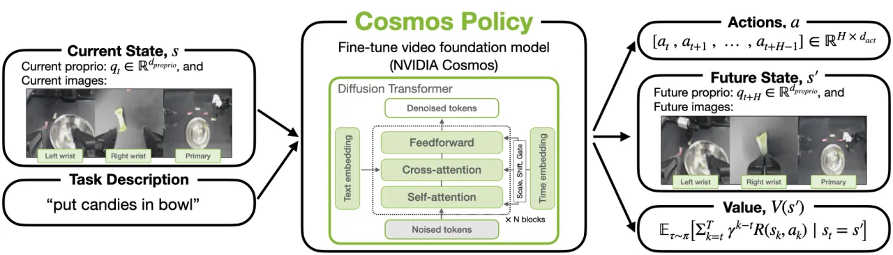
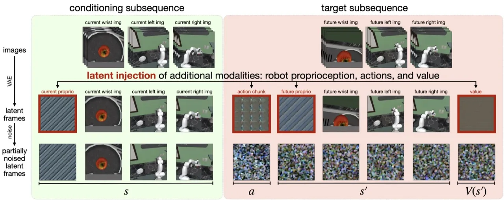
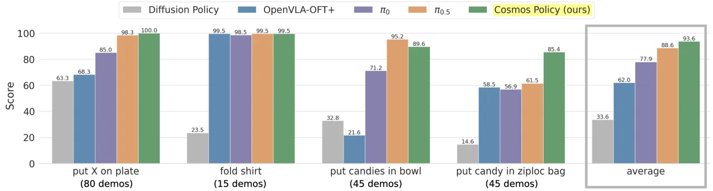
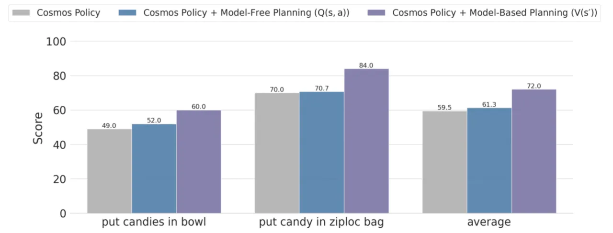
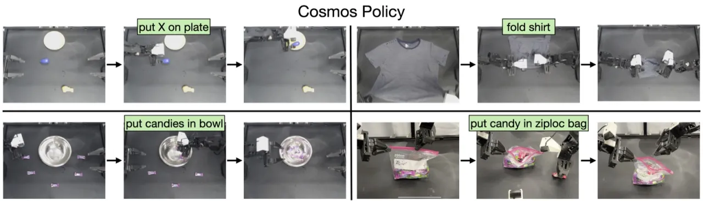

本文提出 Cosmos Policy，一种将大型预训练视频生成模型（Cosmos-Predict2-2B）通过单阶段 fine-tuning 转化为机器人控制策略的方法。 通过将机器人动作编码为 diffusion 过程中的 latent frames，无需修改基础模型架构即可学习复杂的动作分布；同时支持 model-based planning， 在 LIBERO 仿真（98.5%）、RoboCasa（67.1%，仅需 50 条演示）及真实 ALOHA 双臂机器人（93.6%）任务上取得最先进性能。
大型预训练视频生成模型捕获了丰富的时序动态与隐式物理先验，理论上是理想的机器人策略骨干网络—— 然而如何将其高效转化为可执行的控制策略，此前仍缺乏简洁的单阶段解决方案。
"large pretrained video generation models have shown impressive ability to generate physically plausible and temporally coherent videos"—— 这一能力与机器人任务高度契合，但既有方法往往需要多阶段训练或大量架构改动。

Cosmos Policy 的核心思路是将机器人动作、本体感知与价值估计编码为视频模型 diffusion 过程中的 latent frames， 从而在不修改任何模型权重结构的前提下，通过单阶段 fine-tuning 同时学习策略、世界模型和价值函数。

区别于添加新模块的传统做法，Cosmos Policy 将所有额外模态——机器人动作、本体感知、价值估计—— 编码为 latent 空间中的"帧"，直接嵌入原始 diffusion 序列。 以多相机 ALOHA 为例，latent 序列依次包含：空白占位帧、机器人本体感知、腕部相机、第三视角相机、 动作 chunk、未来本体感知、未来图像与未来状态价值。 输出可并行生成（更快，适合直接策略执行）或自回归生成（质量更高，适合 planning）。
为避免策略过度依赖单一监督信号，训练 batch 按比例混合三类目标：
辅助监督（未来状态预测 + 价值估计）显著提升了策略质量。消融实验显示，去掉辅助 loss 后 LIBERO 平均成功率从 98.5% 降至 97.0%（-1.5%）。
推理阶段，Cosmos Policy 实现 best-of-N 采样：并行采样多个动作候选，由 planning 模型预测每个动作 导致的未来状态与价值，选择价值最高的动作执行。聚合策略采用 "majority mean"—— 先根据阈值判断多数预测是成功还是失败，再对多数群体内的预测取均值，以提高鲁棒性。 实验表明，model-based V(s′) planning 优于 model-free Q(s, a) planning， 归因于在有限 rollout 数据下更高效的学习。
在三个基准上评估：LIBERO 仿真（4 个任务套件）、RoboCasa 仿真（24 个厨房任务）以及真实 ALOHA 双臂机器人（4 个复杂操作任务）。 与 CogVLA、OpenVLA-OFT、π₀.₅、π₀、Video Policy、FLARE、GR00T-N1.5 等最先进方法对比。
| 方法 | Spatial | Object | Goal | Long | 平均 |
|---|---|---|---|---|---|
| OpenVLA-OFT | — | — | — | — | 97.1% |
| CogVLA | — | — | — | — | 97.4% |
| π₀.₅ | — | — | — | — | 96.9% |
| Cosmos Policy | 98.1% | 100.0% | 98.2% | 97.6% | 98.5% |
| 方法 | 演示数量 | 平均成功率 |
|---|---|---|
| Video Policy | 300 条 | 66.0% |
| FLARE | 300 条 | 66.4% |
| GR00T-N1.5 | 300 条 | 64.1% |
| Cosmos Policy | 50 条 | 67.1% |
Cosmos Policy 仅使用 50 条演示（为对比方法的 1/6），便超越了使用 300 条演示的所有基线，显示出强大的 data efficiency。

| 任务 | OpenVLA-OFT+ | π₀ | π₀.₅ | Cosmos Policy |
|---|---|---|---|---|
| Put X on plate | — | — | — | 100.0 |
| Fold shirt | — | — | — | 99.5 |
| Put candies in bowl | — | — | — | 89.6 |
| Put candy in ziploc bag | — | — | — | 85.4 |
| 平均 | 62.0 | 77.9 | 88.6 | 93.6 |


Model-based planning 模式下，每次产生一个 action chunk 约需 5 秒， 限制了该方案在动态、时间敏感任务上的适用性。对于需要快速反应的场景，当前 planning 延迟是主要瓶颈。
有效的 planning 需要超出演示分布的大量 rollout 数据，以实现对分布外状态的准确预测。 当 rollout 数据不足时，世界模型的泛化能力受限，planning 的收益也随之下降。
当前方案采用"best-of-N planning with one layer in the search tree"的单步规划策略， 无法进行多步前瞻。作者指出，扩展预测 horizon 以及多层规划树有望进一步提升性能，但尚未实现。